Keeping AKS Clusters Continuously Secure With Azure Policy
🐇This blog post is also a contribution to Azure Spring Clean 2023 where during 5 weekdays of March, 13th-17th, community contributors share learning resources that highlight best practices, lessons learned, and help with some of the more difficult topics of Azure Management. You’re welcome to check out all the contributions here: Azure Spring Clean 2023
As you may know already, Kubernetes doesn’t come with 100% built-in security by default. The same applies for managed Kubernetes service offerings like Azure Kubernetes Service (AKS). Some cloud providers offer more hardened default configuration for a managed Kubernetes service, some offer less hardened and more beginner-friendly default configuration, but the fact stays the fact - cloud services are a shared responsibility. It means that you’re responsible to properly harden and secure Kubernetes clusters that you’re provisioning in the cloud, also in Azure.
But is there a way that can help you make this process easier and help you ensure continuous compliance and security?
There are multiple ways to the goal indeed, and one of the ways is called Azure Policy. Now let’s dig into what Azure Policy is and how it can be applied to AKS. 😼
AzPolicy 💜 K8s: Introduction and highlights
If you’re not familiar with Azure Policy and are working (or planning to work) with Azure, I definitely recommend you to start using it asap. Azure Policy is a service that provides you with a collection of rules, aka policy definitions, that you can enforce in order to ensure proper automatic and continuous governance and compliance of your Azure workloads, and even hybrid workloads like Azure Arc resources. You can also create custom policies to govern the areas that are not covered by the collection of built-in policies. We’ll shortly see how you can combine both built-in and custom policies to govern AKS clusters.😺
You’re welcome to check out the Additional resources section in the bottom of this blog post for more learning material on areas related to Azure Policy for Kubernetes.
Azure Policy has a dedicated category called “Kubernetes” which contains all the built-in and custom policy definitions that can be applied to AKS and Azure Arc-enabled Kubernetes clusters. You can use this category as a filter in order to quickly get access to all the policies that can be applied to Kubernetes clusters and workloads.
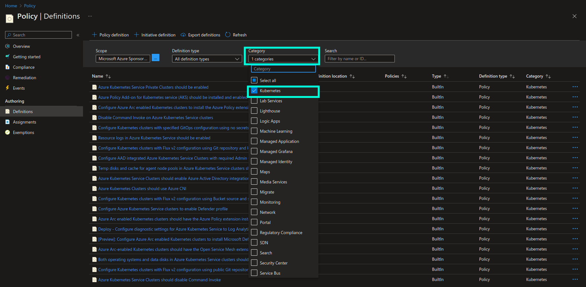
How does AKS governance with Azure Policy work behind the scenes?
Once enabled, Azure Policy is installed as an add-on in the respective AKS clusters. Azure Policy for Kubernetes is based on extension of Gatekeeper v3 which is an admission controller webhook for Open Policy Agent (OPA). OPA is an open source policy agent that is widely used for governance of not only Kubernetes in general but also a bunch of different services like API gateways, CI/CD pipelines, event streaming platforms like Apache Kafka, etc.
The way that Azure Policy for Kubernetes was implemented comes with an additional benefit when it comes to extensibility: since the implementation is based on top of an existing open source technology that is widely used in the industry, it allows us to extend governance to those areas which are not covered by the built-in policy definitions by using extensively tested, mature open source tools. We can do that by creating custom Azure Policy definitions and use OPA’s policy language called Rego to define the Constraints and ConstraintTemplates that we want to be used for custom policy enforcement and evaluation.
I will not go through all the built-in Azure policy definitions that are included in the Kubernetes category - most of them have a well-defined, helpful description provided. It’s important to highlight though that most of the built-in policies represent security controls that are required by security frameworks like OWASP Top 10 for Docker/Kubernetes, CIS Kubernetes/Docker Benchmark, Kubernetes Hardening Guidance and AKS security baseline. Therefore, enforcing Azure Policy definitions in your AKS clusters, acting upon and remediating findings from the policy evaluations, will help you ensure and document continuous compliance with the well-established security frameworks and standards, which may be required by your users and customers.
Another interesting highlight is that Kubernetes category in Azure Policy contains two important policy initiatives that represent a purposefully created collection of policies that are supposed to be enforced together. Policy initiative will be marked as compliant once all the applicable resources are compliant with all policy definitions that are part of the policy initiative. You can see respective policy initiatives in the screenshot below. These initiatives represent Kubernetes Pod Security Standards (PSS) - a collection of best practices for implementing baseline (minimally restrictive) and heavily restricted security level for Kubernetes workloads. PSS are established and maintained by the Kubernetes community and you can find a detailed overview of all the policies in the official Kubernetes documentation (link provided below).
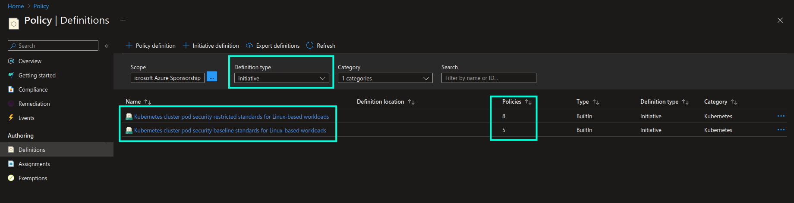
Now, let’s take a look at how we can implement Azure Policy for Kubernetes in practice.😼
AzPolicy 💜 K8s: Practical walkthrough
It’s time to get more hands-on! In this walkthrough we’ll see what pre-requisites are needed in order to start using Azure Policy for Kubernetes, as well as how to enforce built-in and custom policies in AKS clusters - both through Azure portal, Azure CLI and infrastructure-as-code with Terraform.
Azure Policy add-on
In order to start using Azure Policy for Kubernetes you need to enable Azure Policy add-on on the AKS clusters that you want to govern. Once enabled, Gatekeeper and Azure Policy related Pods will be deployed in the respective clusters:

Please note that the more workloads that need to be evaluated, the more resources will be consumed by the Azure Policy and Gatekeeper components in the cluster. Therefore you need to ensure that you have enough resources to begin with and can scale accordingly in order to avoid unpredictably failing audit and enforcement operations. Please check general Recommendations and Limitations for using Azure Policy add-on for Kubernetes for more information.
You can enable Azure Policy add-on for AKS clusters in multiple ways:
Azure Portal
When creating a new AKS cluster you can enable Azure Policy add-on in the Integrations section, as shown in the screenshot below:
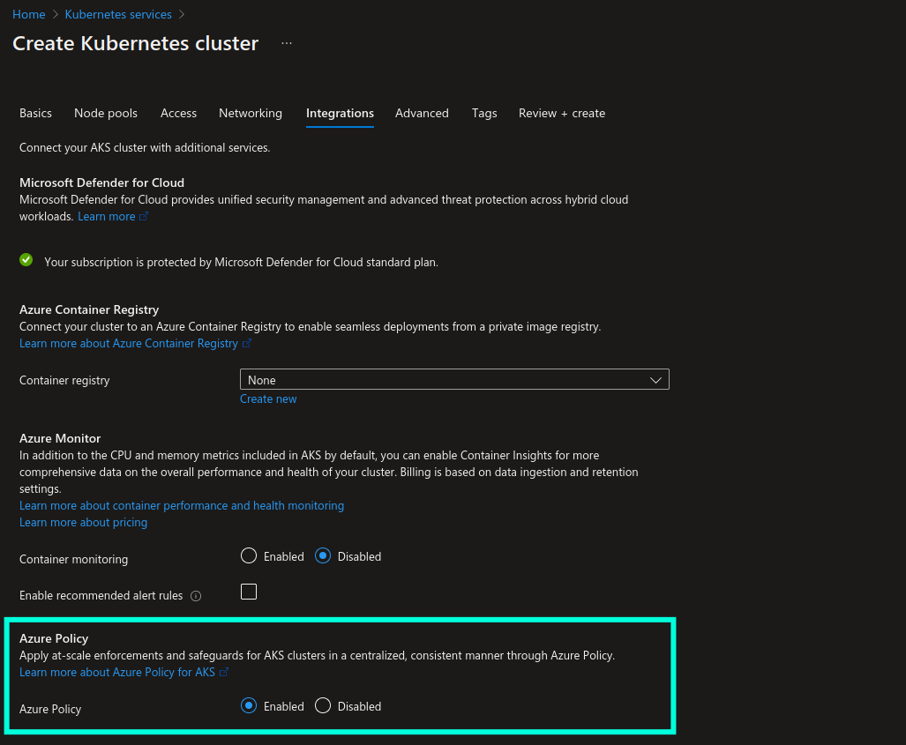
You can enable Azure Policy add-on on existing AKS cluster from the Settings -> Policies section, as shown in the screenshot below:
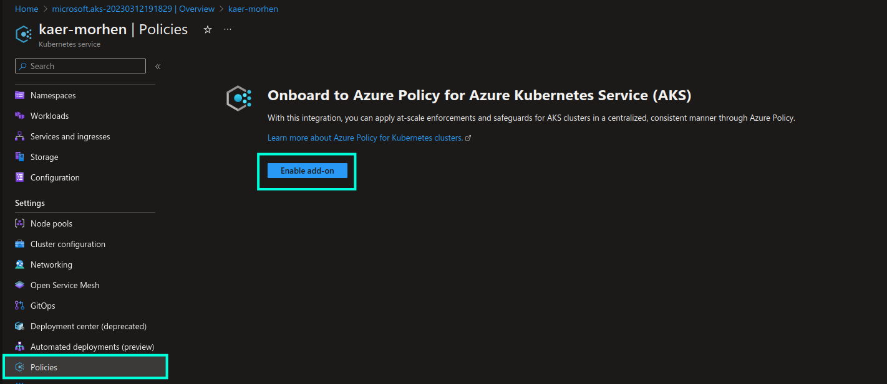
Azure CLI
When creating a new AKS cluster with Azure CLI you can enable Azure Policy add-on with --enable-addons azure-policy parameter. For example:
az aks create --name chamber-of-secrets --resource-group hogwarts-rg --enable-addons azure-policy
Terraform
azure_policy_enabled = true argument can be used to enable Azure Policy add-on with AzureRM provider for Terraform.
For example:
resource "azurerm_kubernetes_cluster" "aks_cluster" {
location = "northeurope"
name = "chamber-of-secrets"
resource_group_name = "hogwarts-rg"
azure_policy_enabled = true
default_node_pool {
name = "agentpool"
vm_size = "Standard_B2s"
}
}
Microsoft Defender for Containers
In order to enable Azure Policy add-on at scale and automate the deployment process both for new and existing AKS clusters, I would recommend to either use IaC with tools like Terraform, as demonstrated in example above, or use Microsoft Defender for Containers. Or use both in combination which is the best option!😸 By enabling Microsoft Defender for Containers you get additional value beyond just automating deployment of Azure Policy add-on at scale…you get additional perks like runtime threat protection and alerting, vulnerability assessment of images stored in Azure Container Registry, audit of cluster data plane in accordance with hardening best practices, etc.
Detailed information about Microsoft Defender for Containers can be found here: Microsoft Defender for Containers.
You can enable Azure Policy add-on with Microsoft Defender for Containers from Defender plans -> Containers -> Settings:
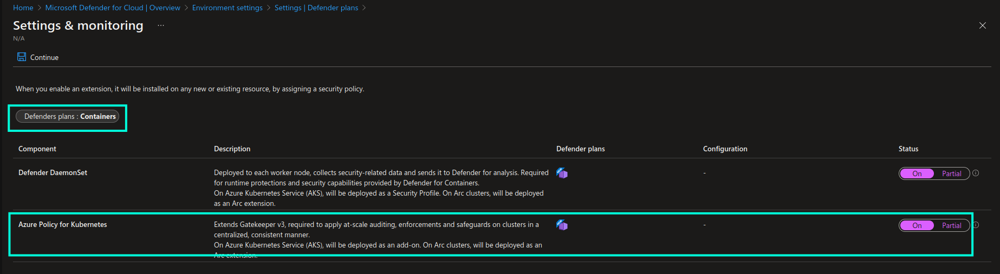
Enforce Azure Policy definitions
Once Azure Policy add-on has been enabled, it’s time to enforce some Azure Policy definitions. This can be done through policy assignment, i.e. by assigning a policy to a specific scope: tenant, subscription, resource group or resource. Let’s start by assigning a built-in policy definition. I will use “Kubernetes cluster should not allow privileged containers” policy definition as an example. This policy will check if a scheduled deployment uses containers with privileged mode enabled and will deny execution of non-compliant deployments in the respective AKS clusters.
Azure Portal
The approach of assigning an Azure Policy definition for Kubernetes is pretty much the same as for assigning policy to any other resource in Azure, so I will not go through the whole process.
Nevertheless, I would like to highlight two things that are worth being aware of:
-
Azure Policy definition scope: as briefly mentioned above, you can assign a policy either on the individual resource level, resource group level, subscription level or tenant level. In most cases you would want to enable policies either on subscription or tenant level to ensure that the same policies apply to all the new AKS clusters that will be created across subscription or even subscriptions in the same tenant.
-
Azure Policy definition parameters: in the Parameters section of the policy assignment view I would recommend to always leave “Only show parameters that need input or review” unchecked, because in that case all the available configuration options for the respective policy definition will be visible to you. You can then ensure that the policy’s behaviour is configured correctly, as per your use case. Below you can see all the possible configuration options for the policy definition that we’re using as an example in this walkthrough:
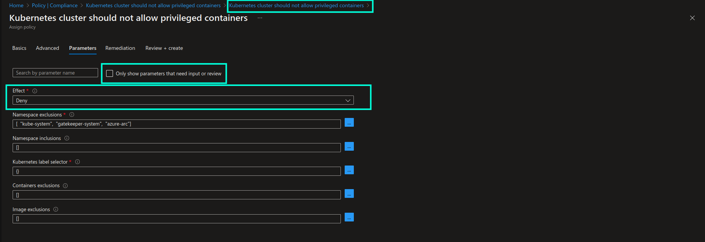
Once the policy is enabled you will be able to see it in the list of assigned policies, in addition to the current state of resource compliance in the Compliance blade of the Azure Policy page:
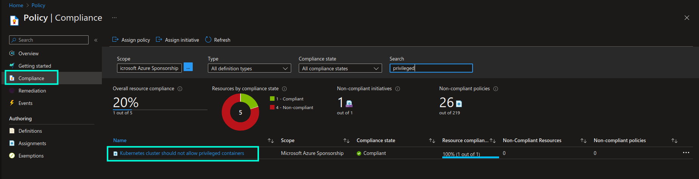
Please note that it may take up to 30 minutes for a new or updated policy to take effect and be evaluated across the AKS clusters. If you want to instantly trigger re-evaluation, you can use
az policy state trigger-scancommand.
If we now attempt to create a deployment with privileged mode enabled…
# deployment.yaml
apiVersion: apps/v1
kind: Deployment
metadata:
name: aks-helloworld
namespace: aks-helloworld
spec:
replicas: 2
selector:
matchLabels:
app: aks-helloworld
template:
metadata:
labels:
app: aks-helloworld
spec:
containers:
- name: aks-helloworld-one
image: aks-helloworld:latest
securityContext:
privileged: true # <- Non-compliant configuration!
# REST OF THE CODE IS OMITTED
…we will get an error, and as a result, no deployment resources, like Pods for instance, will be provisioned in the respective AKS cluster:
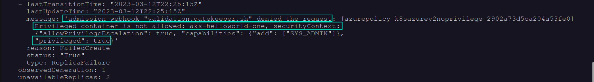
Azure CLI
You can assign the same policy definition with az policy assignment create command in Azure CLI:
az policy assignment create --location northeurope --mi-system-assigned \
--policy "95edb821-ddaf-4404-9732-666045e056b4" -p "{ \"effect\": { \"value\": \"Deny\" } }" \
--scope "/subscriptions/[SUBSCRIPTION_ID]" --display-name "Kubernetes cluster should not allow privileged containers" \
--name "Kubernetes cluster should not allow privileged containers" --description "Do not allow privileged containers creation in a Kubernetes cluster."
Azure Policy definition ID, that is provided as a value to --policy parameter in the example above, can be found on the individual policy definition view, as shown in the screenshot below:
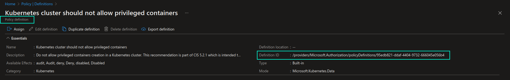
You can find more information about az policy assignment create command here: az policy assignment create
Terraform (IaC)
Finally, if we were to assign the same built-in policy definition with AzureRM provider for Terraform, we could use azurerm_subscription_policy_assignment resource to assign the policy on the subscription level. If you want to assign a policy on a different scope, you can use azurerm_management_group_policy_assignment, azurerm_resource_group_policy_assignment or azurerm_resource_policy_assignment accordingly.
resource "azurerm_subscription_policy_assignment" "pa_aks_privileged_containers" {
name = "pa-aks-deny-privileged-containers"
location = "northeurope"
policy_definition_id = "/providers/Microsoft.Authorization/policyDefinitions/a3461c8c-6c9d-4e42-a644-40ba8a1abf49"
subscription_id = "/subscriptions/[SUBSCRIPTION_ID]"
description = "Deny Kubernetes cluster deployments that are using privileged containers"
display_name = "Kubernetes cluster should not allow privileged containers"
enforce = true
identity {
type = "SystemAssigned"
}
parameters = <<PARAMETERS
{
"effect": {
"value": "Deny"
}
}
PARAMETERS
}
You can read more about Subscription Policy Assignment resource in Azure provider for Terraform here: azurerm_subscription_policy_assignment
Policy assignment often requires a managed identity, either a system- or user-assigned, with specific permissions, in order to perform evaluation of resource compliance and execute remediation tasks, if needed. In this example we’re using SystemAssigned identity for simplicity reasons, but a better option is to use UserAssigned managed identities when assigning policies. In a subsequent blog post I will demonstrate how you can do that so do come back here again for more content on this topic!🤗
Create and enforce custom Azure Policy definitions
Built-in Azure Policy definitions can’t always cover all the areas that you may want to govern, therefore creating custom Azure Policy definitions can come in really handy in such cases. Let’s take a look at a simple example: I will create a custom policy that will only allow deployment of AKS clusters to North Europe region.
Below you can see how such a custom policy definition can be defined in Terraform, but you can also create it directly in the Azure portal or with Azure CLI or even Bicep - here’s a good tutorial on how to do that: Implement a new custom policy
resource "azurerm_policy_definition" "cpd_aks_deploy_region" {
name = "cpd-aks-allow-deploy-northeurope"
policy_type = "Custom"
mode = "All"
display_name = "Create AKS clusters only in North Europe"
description = "Only allow deployment of AKS clusters in North Europe region."
metadata = <<METADATA
{
"version": "1.0.0",
"category": "Kubernetes"
}
METADATA
policy_rule = <<POLICY_RULE
{
"if": {
"allOf": [
{
"field": "type",
"in": [
"Microsoft.Kubernetes/connectedClusters",
"Microsoft.ContainerService/managedClusters"
]
},
{
"field": "location",
"notIn": [
"northeurope"
]
}
]
},
"then": {
"effect": "deny"
}
}
POLICY_RULE
}
This creates a custom Azure Policy definition, which you can locate in the Azure policy definition list together with existing built-in policy definitions:
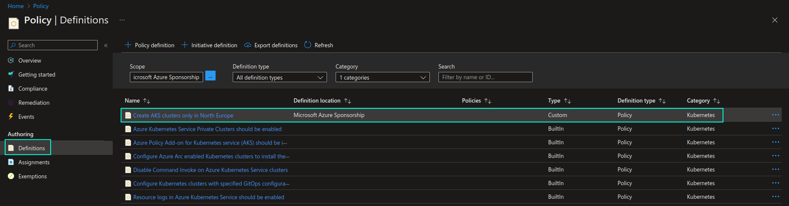
In order to enforce this custom policy you will need to assign it to the scope of your choosing, just as we did with the built-in policy definition in the earlier section. Once the custom policy definition is assigned, we can test it by attempting to create an AKS cluster in West Europe region and verifying that deployment will be denied due to the policy violation. You can see the result of this action in the screenshot below:
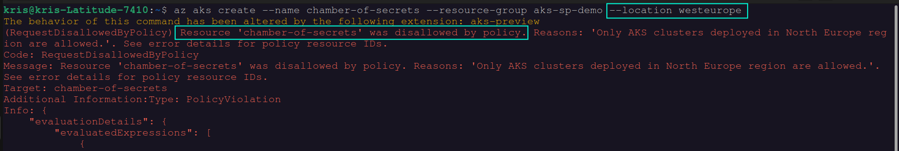
As you can see, in this case, you didn’t even need to use Rego to be able to define a custom policy that can be applied to AKS clusters, but in some cases you may still need to do that in order to achieve specific requirements. If you’re new to Rego, my recommendation in this case would be, first of all, to check the official documentation with provided examples (see link below). In addition to that I would recommend to look into how similar implementation is done in the built-in Azure Policy definitions - many of them link to the ContraintTemplate definitions that were created with help of Rego, which you can use as a foundation for your own custom policy. Even the “Kubernetes cluster should not allow privileged containers” built-in Azure Policy definition, that we used as an example for the walkthrough in the above section, used Rego for policy constraint implementation.
In the subsequent blog posts I will provide more advanced examples of implementing custom Azure Policy definitions with help of Rego, so stay tuned!😉
I will also be adding custom Azure Policy definitions in this GitHub repo - you’re welcome to check it out as well: guidemetothemoon/div-dev-resources
Azure Policy Remediation
Azure Policy definitions that are assigned with deployIfNotExists or modify effects support remediation. Remediation represents a collection of tasks that can be executed on non-compliant resources in order to make them compliant in accordance with the respective policy.
Let’s take a look at an example. If I enforce a “Deploy Azure Policy Add-on to Azure Kubernetes Service clusters” built-in Azure Policy definition with a DeployIfNotExists effect, I can then create a remediation task to automatically fix non-compliant resources,- for example through IaC with Terraform, like shown below:
resource "azurerm_subscription_policy_remediation" "pr_aks_deploy_azpolicy_addon" {
name = "pr-deploy-vm-qualys"
subscription_id = "/subscriptions/[SUBSCRIPTION_ID]"
policy_assignment_id = "/subscriptions/[SUBSCRIPTION_ID]/providers/microsoft.authorization/policyassignments/[ASSIGNMENT_ID]"
resource_discovery_mode = "ReEvaluateCompliance"
}
If you want to create a remediation task in a different scope, you can use azurerm_management_group_policy_remediation, azurerm_resource_group_policy_remediation or azurerm_resource_policy_remediation accordingly.
Once non-compliant resources are identified, a remediation task will be triggered. You will be able to check the task execution status in the Remediation -> Remediation tasks section of the Azure Policy page.
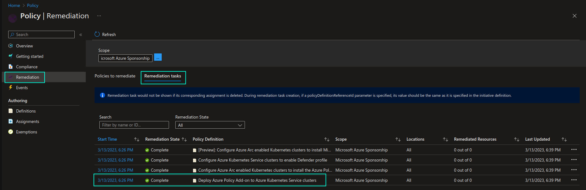
Here’s a great article that explains what remediation is and how you can execute remediation tasks for enforced Azure Policy definitions: Remediate non-compliant resources with Azure Policy.
Additional resources
Below you may find a few additional resources to learn more about Azure Policy for Kubernetes and related tools:
-
MS Learn: Remediate non-compliant resources with Azure Policy
-
Check out Policy section in Azure provider for Terraform documentation: Terraform - Azure Provider
As you can see, Azure Policy for Kubernetes is a very powerful mechanism that you can use in order to continuously govern your AKS clusters and ensure that they are compliant and securely configured at scale. Being implemented on top of a mature open source policy engine (OPA) in combination with Gatekeeper, Azure Policy for Kubernetes also allows for extensibility and even more granular governance and control of cluster configuration with custom Azure Policy definitions. 🦾
That’s it from me this time, thanks for checking in!💖
If this article was helpful, I’d love to hear about it! You can reach out to me on LinkedIn, Twitter, GitHub or by using the contact form on this page.😺
Stay secure, stay safe.
Till we connect again!😻